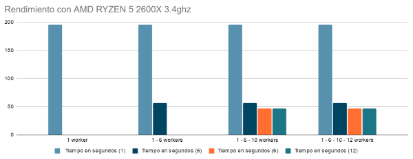

Rendimiento

Con respecto al rendimiento, hemos obtenido una mejora de tiempo sobre unos 2 minutos y 22 segundos al ejecutar nuestro programa con los dos csv que utilizamos únicamente en el análisis por continentes, pasamos de 3 minutos y 8 segundos a 46 segundos aprox en la ejecución con 10 workers. Estos tiempos incluyen el análisis sentimental de 1 millón de tuits aprox más la división que realizamos nosotros sobre el dataframe.
Observamos que existe un overhead a partir de los 10 workers, esto se debe al coste de preparar el procesamiento paralelo para más workers de lo necesario, pues a continuación de 10 las particiones del dataset dejan de ser eficientes y aumenta el coste de media entre 0.2 y 0.5 segundos. En este gráfico se muestra el coste en segundos con 10 siendo 46.876 y con 12 workers en 47.12 segundos. En el uso de datasets más grandes esperamos que la mayor diivisión de trabajo sea la que cause una mayor mejora en el rendimiento.